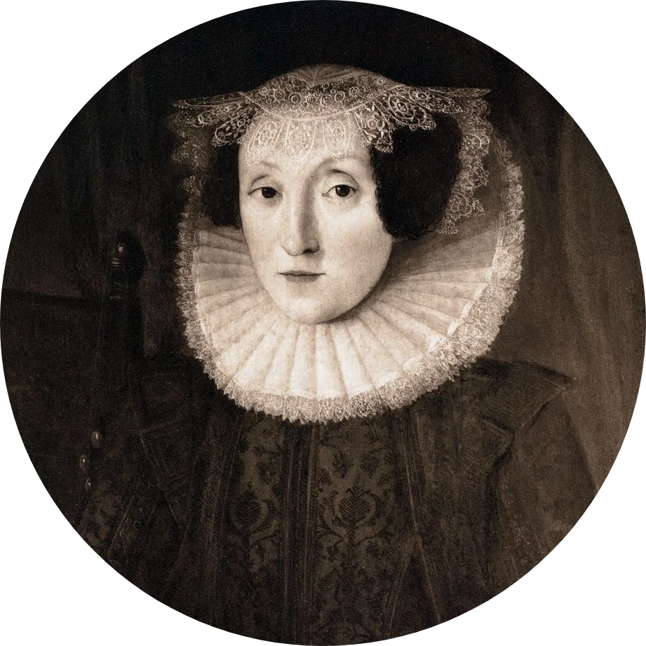

"Judge, O Lord, the wrong that lieth in men's hearts;
Thy hand makes right, yet their deceit departs not."
— Mary Sidney
Psalm 58 [tr.]

Mary Herbert, Countess of Pembroke (née Sidney, 27 October 1561 – 25 September 1621) was among the first Englishwomen to gain notice for her poetry and her literary patronage. By the age of 39, she was listed with her brother Philip Sidney and with Edmund Spenser and William Shakespeare among the notable authors of the day in John Bodenham's verse miscellany Belvidere. Her play Antonius (a translation of Robert Garnier's Marc Antoine) is widely seen as reviving interest in soliloquy based on classical models and as a likely source of Samuel Daniel's closet drama Cleopatra (1594) and of Shakespeare's Antony and Cleopatra (1607). She was also known for translating Petrarch's "Triumph of Death", for the poetry anthology Triumphs, and above all for a lyrical, metrical translation of the Psalms.